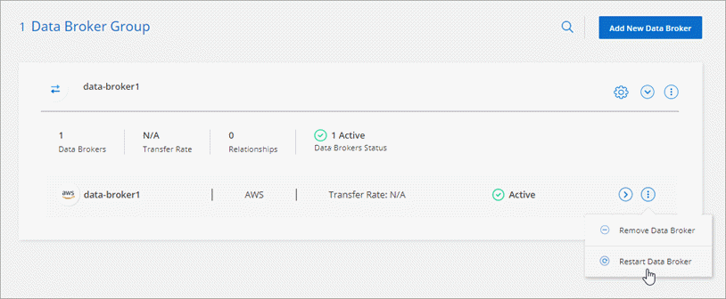

ドキュメントの変更をリクエスト
ドキュメントの変更をリクエスト GitHub で編集
GitHub で編集 寄稿者向けガイド
寄稿者向けガイドCloud Sync の新機能
Cloud Sync の新機能をご確認ください。
2022年6月6日
継続的な同期
新しい設定を使用すると、ソースのS3バケットからターゲットに変更を継続的に同期できます。
初期データ同期が完了すると、Cloud Sync はソースS3バケットで変更をリスンし、ターゲットへの変更が発生した場合はその変更を継続的に同期します。ソースを定期的に再スキャンする必要はありません。この設定は、S3バケットからS3、Google Cloud Storage、Azure BLOBストレージ、StorageGRID 、またはIBMストレージに同期する場合にのみ使用できます。
データブローカーに関連付けられているIAMロールでは、この設定を使用するために次の権限が必要です。
"s3:GetBucketNotification",
"s3:PutBucketNotification"これらの権限は、新しく作成したすべてのデータブローカーに自動的に追加されます。
すべてのONTAP ボリュームを表示します
同期関係を作成するときに、ソースCloud Volumes ONTAP システム、オンプレミスONTAP クラスタ、またはCloud Sync ONTAP ファイルシステムのFSXにすべてのボリュームが表示されるようになりました。
以前は、Cloud Sync では、選択したプロトコルに一致するボリュームのみが表示されていました。すべてのボリュームが表示されますが、選択したプロトコルに一致しないボリュームや、共有やエクスポートがないボリュームはグレー表示され、選択できません。
Azure Blobへのタグのコピー
Azure Blobがターゲットである同期関係を作成する際に、Cloud Sync でタグをAzure BLOBコンテナにコピーできるようになりました。
-
[設定（* Settings ）]ページでは、[*オブジェクトのコピー（* Copy for Objects *）]設定を使用して、ソースからAzure BLOBコンテナにタグをコピーできます。これは、メタデータのコピーに加えて機能します。
-
* Tags/Metadata*ページで、Azure BLOBコンテナにコピーされるオブジェクトに設定するBLOBインデックスタグを指定できます。以前は、関係のメタデータしか指定できませんでした。
これらのオプションは、Azure Blobがターゲットで、ソースがAzure BlobエンドポイントまたはS3互換エンドポイント（S3、StorageGRID 、IBM Cloud Object Storage）の場合にサポートされます。
2022年5月1日
同期タイムアウト
新しい* Sync Timeout *設定を同期関係に使用できるようになりました。この設定を使用すると、指定した時間数または日数内に同期が完了していない場合にCloud Sync でデータの同期をキャンセルするかどうかを定義できます。
通知
新しい* Notifications *設定を同期関係に使用できるようになりました。この設定を使用すると、Cloud Sync 通知をCloud Managerの通知センターで受信するかどうかを選択できます。データの同期が成功した場合、データの同期が失敗した場合、データの同期がキャンセルされた場合の通知を有効にできます。

2022 年 4 月 3 日
データブローカーグループの機能拡張
データブローカーグループには、次のような機能拡張が行われました。
-
データブローカーを新規または既存のグループに移動できるようになりました。
-
データブローカーのプロキシ設定を更新できるようになりました。
-
最後に、データブローカーグループを削除することもできます。
ダッシュボードフィルタ
Sync Dashboard の内容をフィルタリングして、特定のステータスに一致する同期関係を簡単に見つけることができるようになりました。たとえば、ステータスが「失敗」の同期関係をフィルタリングできます

2022 年 3 月 3 日
ダッシュボードでソートします
ダッシュボードを同期関係名でソートできるようになりました。
 オプションを示すスクリーンショット。"]
オプションを示すスクリーンショット。"]
データセンスの統合の強化
以前のリリースでは、 Cloud Sync とクラウドデータセンスの統合を導入しました。この更新プログラムでは、同期関係を簡単に作成できるように統合を強化しました。Cloud Data Sense からデータ同期を開始すると、すべてのソース情報が 1 つの手順で表示されるため、重要な情報をいくつか入力するだけで済みます。

2022 年 2 月 6 日
データブローカーグループの機能拡張
データブローカーの操作方法は、 dataBroker_groups_を 強調するように変更されました。
たとえば、新しい同期関係を作成する場合は、特定のデータブローカーではなく、データブローカーの _GROP_To がその関係で使用するように選択します。

[ データブローカーの管理 *] タブには、データブローカーグループが管理している同期関係の数も表示されます。

2022 年 1 月 2 日
新しい Box 同期関係
2 つの新しい同期関係がサポートされています。
-
Box to Azure NetApp Files の略
-
Box から Amazon FSX for ONTAP に移動します
関係名
同期関係ごとにわかりやすい名前を指定できるようになり、各関係の目的を簡単に特定できるようになりました。この名前は、関係の作成時および作成後にいつでも追加できます。

S3 プライベートリンク
Amazon S3 との間でデータを同期する際に、 S3 プライベートリンクを使用するかどうかを選択できます。データブローカーは、ソースからターゲットにデータをコピーする際、プライベートリンクを経由します。
データブローカーに関連付けられている IAM ロールでは、この機能を使用するために次の権限が必要です。
"ec2:DescribeVpcEndpoints"この権限は、作成した新しいデータブローカーに自動的に追加されます。
Glacier のインスタント検索
Amazon S3 が同期関係のターゲットである場合に、 _Glacier Instant Retrieve_storage クラスを選択できるようになりました。
オブジェクトストレージから SMB 共有への ACL
Cloud Sync で、オブジェクトストレージから SMB 共有への ACL のコピーがサポートされるようになりました。これまでは、 SMB 共有からオブジェクトストレージへの ACL のコピーのみがサポートされていました。
S3 への SFTP を使用します
SFTP から Amazon S3 への同期関係の作成がユーザインターフェイスでサポートされるようになりました。この同期関係は、以前は API でのみサポートされていました。
テーブルビューの拡張機能
ダッシュボードのテーブルビューを再設計して使いやすくしました。詳細情報 * をクリックすると、ダッシュボードが Cloud Sync でフィルタされ、その関係に関する詳細情報が表示されます。

Jarkarta 地域のサポート
Cloud Sync は、 AWS アジア太平洋（ジャカルタ）リージョンでのデータブローカーの導入をサポートするようになりました。
2021 年 11 月 28 日
SMB からオブジェクトストレージへの ACL
ソースの SMB 共有からオブジェクトストレージ（ ONTAP S3 を除く）への同期関係を設定する際に、 Cloud Sync でアクセス制御リスト（ ACL ）をコピーできるようになりました。
Cloud Sync では、オブジェクトストレージから SMB 共有への ACL のコピーはサポートされていません。
ライセンスを更新します
拡張した Cloud Sync ライセンスを更新できるようになりました。
ネットアップから購入した Cloud Sync ライセンスを延長した場合は、ライセンスを再度追加して有効期限を更新できます。
2021 年 10 月 31 日
ボックスサポート
Cloud Sync ユーザーインターフェイスで Box サポートがプレビューとして利用できるようになりました。
Box は、複数のタイプの同期関係のソースまたはターゲットにすることができます。 "サポートされている同期関係のリストを表示します"。
作成日の設定
SMB サーバがソースの場合、 _Date Created _ という名前の新しい同期関係設定によって、特定の日付以前、特定の日付以前、または特定の時間範囲内に作成されたファイルを同期できます。
2021 年 10 月 4 日
追加のボックスサポート
Cloud Sync で追加の同期関係がサポートされるようになりました "ボックス" Cloud Sync API を使用する場合：
-
Amazon S3 の機能です
-
IBM Cloud Object Storage to Box の略
-
StorageGRID To Box の略
-
Box を NFS サーバに接続します
-
Box を SMB サーバーに追加します
SFTP パスに関するレポート
次の操作を実行できます。 "レポートを作成します" SFTP パスの場合
2021 年 9 月 2 日
ONTAP の FSX のサポート
Amazon FSX for ONTAP ファイルシステムとの間でデータを同期できるようになりました。
2021 年 8 月 1 日
クレデンシャルを更新
Cloud Sync で、既存の同期関係のソースまたはターゲットの最新のクレデンシャルを使用してデータブローカーを更新できるようになりました。
この拡張機能は、セキュリティポリシーで定期的にクレデンシャルを更新するように要求される場合に役立ちます。 "クレデンシャルを更新する方法について説明します"。
 ページの [ 資格情報の更新 ] オプションを示すスクリーンショット。"]
ページの [ 資格情報の更新 ] オプションを示すスクリーンショット。"]
オブジェクトストレージターゲットのタグ
同期関係を作成するときに、同期関係内のオブジェクトストレージターゲットにタグを追加できるようになりました。
タグの追加は、 Amazon S3 、 Azure Blob 、 Google Cloud Storage 、 IBM Cloud Object Storage 、および StorageGRID でサポートされています。

Box のサポート
Cloud Sync は現在サポートされています "ボックス" Cloud Sync API を使用する際に、 Amazon S3 、 StorageGRID 、 IBM Cloud Object Storage との同期関係のソースとして使用。
Google Cloud のデータブローカー用パブリック IP
Google Cloud にデータブローカーを導入する際に、仮想マシンインスタンスに対してパブリック IP アドレスを有効にするか無効にするかを選択できるようになりました。
Azure NetApp Files 用のデュアルプロトコル・ボリューム
Azure NetApp Files のソースボリュームまたはターゲットボリュームを選択した場合、同期関係用に選択したプロトコルに関係なく、 Cloud Sync にデュアルプロトコルボリュームが表示されるようになりました。
2021 年 7 月 7 日
ONTAP S3 ストレージと Google Cloud Storage
Cloud Sync のユーザインターフェイスで、 ONTAP S3 ストレージと Google Cloud Storage バケットの間の同期関係がサポートされるようになりました。
オブジェクトメタデータタグ
同期関係を作成して設定を有効にすると、 Cloud Sync でオブジェクトベースのストレージ間でオブジェクトのメタデータとタグをコピーできるようになりました。
"[ オブジェクトのコピー 設定の詳細については、を参照してください"]。
橋本事業者のためのサポート
Google Cloud サービスアカウントで認証することで、外部の橋本 Vault からクレデンシャルにアクセスするようにデータブローカーを設定できるようになりました。
S3 バケットのタグまたはメタデータを定義する
Amazon S3 バケットとの同期関係を設定する際に、ターゲットの S3 バケット内のオブジェクトに保存するタグまたはメタデータを同期関係ウィザードで定義できるようになりました。
タグ付けオプションは、以前は同期関係の設定に含まれていました。
2021 年 6 月 7 日
Google Cloud のストレージクラス
同期関係のターゲットが Google Cloud Storage バケットの場合、使用するストレージクラスを選択できるようになりました。Cloud Sync では、次のストレージクラスがサポートされます。
-
標準
-
ニアライン
-
コールドライン（ Coldline ）
-
Archive サービスの略
2021 年 5 月 2 日
レポート内のエラー
レポートで見つかったエラーを表示し、最後のレポートまたはすべてのレポートを削除できるようになりました。
属性を比較します
同期関係ごとに新しい * Compare by * 設定を使用できるようになりました。
この詳細設定では、ファイルまたはディレクトリが変更されたために再度同期する必要があるかどうかを判断するときに、 Cloud Sync で特定の属性を比較するかどうかを選択できます。
2021 年 4 月 11 日
スタンドアロンの Cloud Sync サービスは廃止されました
スタンドアロンの Cloud Sync サービスは廃止されました。Cloud Sync には Cloud Manager から直接アクセスできるようになりました。同じ機能がすべて利用可能です。
Cloud Manager にログインしたら、上部の Sync タブに切り替えて、以前と同様に関係を表示できます。
さまざまなプロジェクトで Google Cloud バケットを使用できます
同期関係を設定する際、データブローカーのサービスアカウントに必要な権限を指定している場合は、異なるプロジェクトの Google Cloud バケットから選択できます。
Google Cloud Storage と S3 の間のメタデータ
Cloud Sync は、 Google Cloud Storage と S3 プロバイダ（ AWS S3 、 StorageGRID 、 IBM Cloud Object Storage ）間でメタデータをコピーするようになりました。
データブローカーを再起動
Cloud Sync からデータブローカーを再起動できるようになりました。

最新リリースを実行していない場合に表示されるメッセージです
Cloud Sync は、データブローカーで最新のソフトウェアリリースが実行されていないことを確認できるようになりました。このメッセージは、最新の機能を確実に利用するために役立ちます。